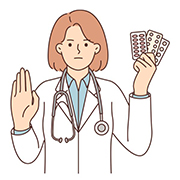

Take antibiotics ONLY if you need them.

Antibiotics ONLY treat certain infections caused by bacteria, such as:
- Strep throat
- Whooping cough
- Urinary tract infection (UTI)

Antibiotics DO NOT work on viruses, such as those that cause:
- Colds and runny noses, even if the mucus is thick, yellow, or green
- Most sore throats (except strep throat)
- Flu
- Most cases of chest colds (bronchitis)

Antibiotics also ARE NOT needed for some common bacterial infections, including:
- Many sinus infections
- Some ear infections

Taking antibiotics when they’re not needed won’t help you, and their side effects can still cause harm. Your doctor can decide the best treatment for you when you’re sick. Never pressure your doctor to prescribe an antibiotic.
Take antibiotics exactly as prescribed if you need them.
If your doctor decides an antibiotic is the best treatment when you’re sick:
- Take them exactly as your doctor tells you.
- Do not share your antibiotics with others.
- Do not save them for later. Talk to your pharmacist about safely discarding leftover medicines.
- Do not take antibiotics prescribed for someone else. This may delay the best treatment for you, make you even sicker, or cause side effects.
Talk with your doctor if you develop any side effects or allergic reactions while taking an antibiotic.

Common side effects range from minor to very severe health problems and can include:
- Rash
- Nausea
- Diarrhea
- Yeast infections

More serious side effects can include:
- C. diff infection, which causes diarrhea that can lead to severe colon damage and death
- Severe and life-threatening allergic reactions
- Antibiotic-resistant infections
If you need antibiotics, the benefits usually outweigh the risks of side effects and antibiotic resistance.
Ask your doctor or pharmacist about ways to feel better if an antibiotic isn’t needed.
Antibiotics aren’t always the answer when you’re sick. Sometimes, the best treatment when you’re sick may be over-the-counter medication. Ask your doctor or pharmacist for tips on how to feel better while your body fights off an infection.